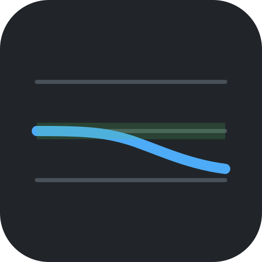

No analysis yet.
The per-detection CSV has one row per detected pitch with its deviation from equal
temperament. The multif0 TSV matches utils_train.save_multif0_output, so it
can be diffed directly against predict_on_audio.py.